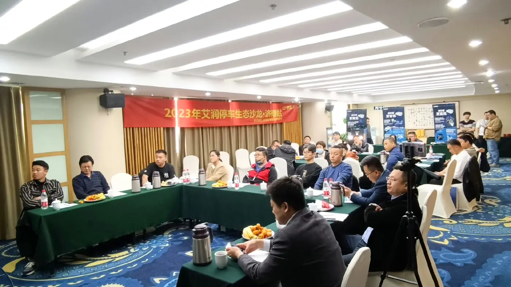
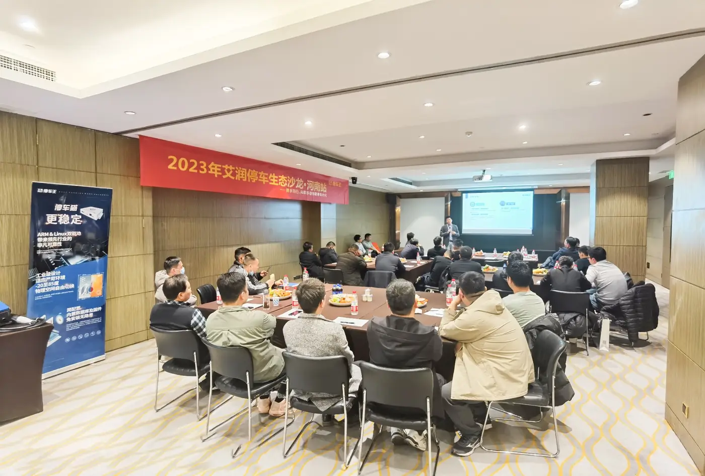
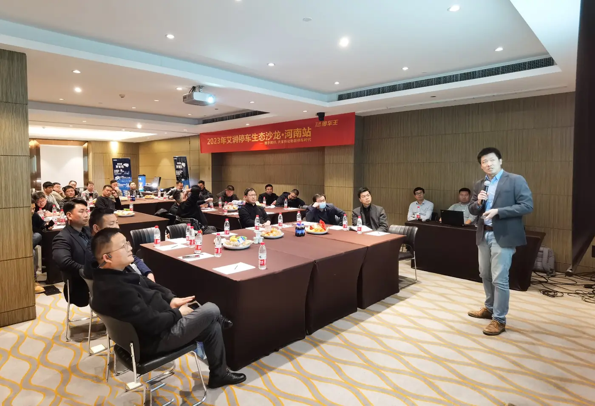
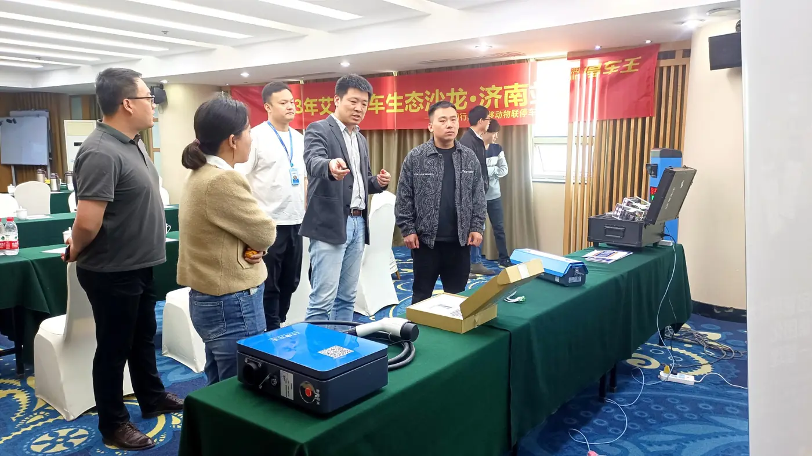

EVENT PLANNING / CHANNEL DEVELOPMENT
渠道招商活动策划
以区域渠道大会与生态沙龙为载体，连接合作伙伴，展示产品方案，推动区域市场交流。

01 / PROJECT OVERVIEW
项目背景
围绕区域渠道拓展与合作伙伴交流需求，策划并推进渠道大会及生态沙龙系列活动。项目覆盖云南、河南和济南，以行业分享、产品展示和面对面交流为主要形式，搭建企业与区域合作伙伴之间的沟通平台。
02 / OBJECTIVES
活动目标
搭建区域伙伴面对面沟通的平台，促进业务交流与合作对接。
结合主题分享与现场展示，介绍智慧停车产品及应用场景。
通过系列活动传递品牌信息，提升合作伙伴对业务的了解。
03 / MY ROLE
个人职责与贡献
作为系列活动负责人，统筹从前期筹备到现场执行、后期整理的完整流程。围绕区域渠道伙伴的交流需求，协调活动内容与现场环节，推动各站活动有序落地。
围绕渠道伙伴的交流需求，统筹各站活动的主题、议程、嘉宾及现场资源准备。
梳理行业交流、产品展示与合作相关内容，统筹活动展示内容及宣传资料。
协调现场流程与各环节衔接，推进主题分享、产品展示和伙伴交流有序进行。
整理现场影像与活动资料，支持后续传播与项目复盘。
04 / APPROACH
系列活动组织思路
围绕区域渠道伙伴的交流需求，将渠道大会与生态沙龙作为不同规模的沟通场景。系列活动以行业分享、产品介绍和面对面交流为共同主线，再结合各站实际活动内容，呈现区域市场交流、合作模式讨论与设备演示等不同重点。
连接区域伙伴
以区域活动搭建企业与渠道伙伴面对面沟通的场景。
串联分享与展示
将行业话题、产品方案和现场交流纳入活动内容，帮助伙伴了解业务。
统筹前后环节
由活动负责人贯通前期筹备、现场执行与后续整理，推动系列活动落地。
05 / REGIONAL EVENTS
系列活动
云南 · 渠道大会
面向区域渠道伙伴开展产品介绍与市场交流。
河南 · 生态沙龙
围绕行业发展、开放合作与停充一体化展开分享。
济南 · 生态沙龙
结合行业交流、平台分享与设备演示促进沟通。
06 / ON SITE
活动现场
从主题分享、互动交流到设备展示，记录系列活动的现场场景。



07 / PROJECT OUTCOMES
活动成果
云南渠道大会吸引各地核心经销商到场，共同交流区域市场与停车场景应用。
通过主题分享与现场演示，向合作伙伴介绍智慧停车平台、产品和设备。
河南、济南站围绕行业发展与合作模式开展交流，搭建面对面沟通场景。